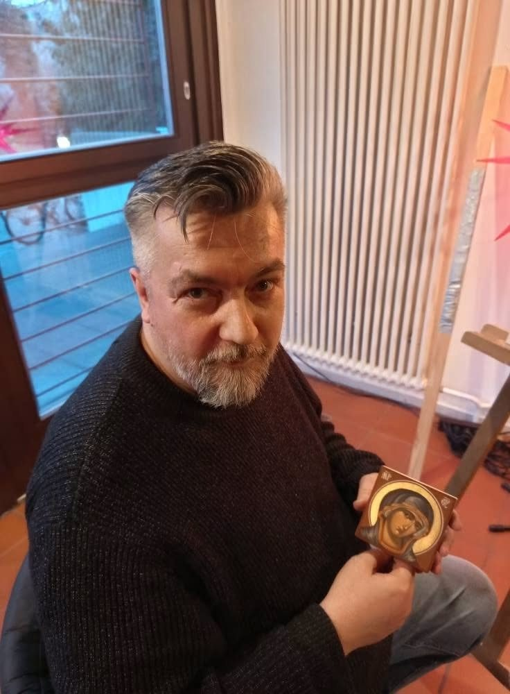

95 × 45 cm
Standikone
Hohes Format für ganzfigurige Heilige – für Kirchen, Kapellen oder einen besonderen Platz im Haus.
Preis auf AnfrageAnfragen →
Jede Ikone entsteht von Hand auf einer formstabilen MDF-Tafel – nach überlieferten Vorbildern, mit Farben aus Pigment und Eigelb und Vergoldungen aus echtem Gold. Ein Unikat für Ihr Zuhause, Ihre Familie oder Ihre Gemeinde.

Drei Beispiele aus Miomirs Werkstatt. In der Galerie finden Sie 34 Ikonen – nach Kategorien geordnet.
In der orthodoxen Tradition sagt man, eine Ikone werde nicht gemalt, sondern „geschrieben“. Jeder Arbeitsschritt folgt überlieferten Regeln – und braucht Zeit.
Als Malgrund dient eine MDF-Platte, oft mit vertiefter Malfläche. Anders als Massivholz verzieht oder reißt sie nicht – auch nicht bei großen Formaten. Die Platte wird glatt geschliffen, mit Gesso grundiert und muss danach gründlich durchtrocknen.
Das Motiv wird nach kanonischen Vorbildern auf den Grund übertragen – Haltung, Gesten und Farben haben jeweils ihre Bedeutung.
Nimben und Hintergründe werden mit hauchdünnem Blattgold von 22 oder 24 Karat belegt. Das Gold steht für das göttliche Licht.
Die Farben werden aus Pigmenten und Eigelb angerührt und in vielen lasierenden Schichten aufgetragen – vom Dunklen zum Hellen.
Zum Schluss erhält die Ikone die Inschrift des Heiligen und einen schützenden Firnis, der die Farben über Generationen bewahrt.

„Eine Ikone ist ein Fenster – nicht zur Welt, sondern zu dem, was hinter ihr liegt.“
Jede Ikone wird für Sie angefertigt – im Maß, das zu Ihrem Raum passt: von der kleinen Reiseikone mit 10 × 10 cm bis zur Kirchenikone mit 2 × 2 m. Hier einige beliebte Formate zur Orientierung.
Hohes Format für ganzfigurige Heilige – für Kirchen, Kapellen oder einen besonderen Platz im Haus.
Für Festtagsikonen mit mehreren Figuren und Gemeinderäume. Ein Werk, das über Generationen bleibt.
Ein beliebtes Format für die Hausikone im Wohnraum oder als Geschenk zu einem großen Anlass.
Das klassische Format für die „schöne Ecke“ – etwa mit dem Namenspatron oder der Gottesmutter.
Ideal als Tauf- oder Namenstagsgeschenk, für das Kinderzimmer oder die Reise.
Gemalt auf echten Steinen – jedes Stück durch die Form des Steins einzigartig. Ein persönliches Geschenk.
Ihr Wunschmaß ist nicht dabei? Jedes Format zwischen 10 × 10 cm und 2 × 2 m ist möglich. Der Preis richtet sich nach Format, Anzahl der Figuren, Umfang der Vergoldung und Arbeitszeit – Sie erhalten ein persönliches Angebot.
Die Ikone des Namenspatrons begleitet ein Kind ein Leben lang.
Traditionelle Hochzeitsikonen – Christus und die Gottesmutter – für das Brautpaar.
Für die Gebetsecke zu Hause, nach Ihrem Wunschmotiv.
Einzelikonen und Festtagsikonen für Gemeinden und Kapellen.
Seit über zwanzig Jahren widmet sich Miomir der orthodoxen Ikonenmalerei – mit Geduld, Demut und großer Liebe zum Detail.
Er malt in der traditionellen Technik der Eitempera: Farben aus Pigmenten und Eigelb, Vergoldungen mit echtem Blattgold von 22 oder 24 Karat, auf formstabilen MDF-Tafeln. So entstehen Ikonen, die nicht nur schön sind, sondern für das Gebet geschaffen wurden – und für Generationen.



Miomir war oft im Kloster Hilandar auf dem Heiligen Berg Athos in Griechenland. Dort ist er bekannt und hat für das Kloster Ikonen gemalt. Der heilige Simeon, dessen Ikone hier zu sehen ist, gründete Hilandar Ende des 12. Jahrhunderts gemeinsam mit seinem Sohn, dem heiligen Sava – beide Motive liegen Miomir besonders am Herzen.
Nennen Sie Miomir die Ikone oder den Heiligen, den Sie sich wünschen, und schreiben Sie ein paar Worte dazu. Sie erhalten ein unverbindliches Angebot mit Preis und voraussichtlichem Fertigstellungstermin.
Wunschmotiv und Format über das Formular schicken.
Miomir prüft Ihre Anfrage und sendet Ihnen ein Angebot mit Preis und Zeitrahmen per E-Mail.
Nach Ihrer Zusage beginnt die Arbeit – Schritt für Schritt in traditioneller Technik.
Die fertige Ikone wird sicher verpackt versendet oder persönlich übergeben.
Miomir sieht sich Ihre Anfrage an und schickt Ihnen ein persönliches Angebot mit Preis und Zeitrahmen an .
Das hängt von Format, Motiv und Vergoldung ab. Eine Ikone entsteht in vielen Schichten, die jeweils trocknen müssen. Den voraussichtlichen Fertigstellungstermin nennt Miomir Ihnen im Angebot.
Ja. Nennen Sie im Formular die gewünschte Ikone – ein Foto Ihrer Vorlage können Sie Miomir gern per E-Mail schicken, sobald er sich bei Ihnen meldet. Er malt sie in seiner Handschrift und in traditioneller Technik – kein Druck, keine Kopie, sondern ein Original.
Auf geschliffenen MDF-Platten, grundiert mit Gesso. Sie sind formstabil, verziehen sich nicht und reißen nicht – so bleibt die Malschicht auch bei großen Ikonen dauerhaft erhalten. Kleinikonen malt Miomir auch auf echten Natursteinen.
Ja. Für Nimben, Hintergründe und Ornamente verwendet Miomir echtes Blattgold mit 22 oder 24 Karat – kein Schlagmetall und keine Goldfarbe.
Viele Kunden lassen ihre Ikone in ihrer Kirche segnen. Sprechen Sie Ihren Wunsch gern in der Anfrage an.
Hängen Sie die Ikone nicht in direktes Sonnenlicht und nicht über die Heizung. Staub nur mit einem weichen, trockenen Pinsel oder Tuch entfernen.